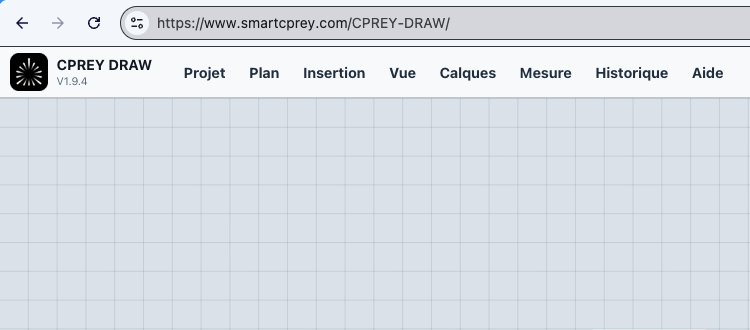
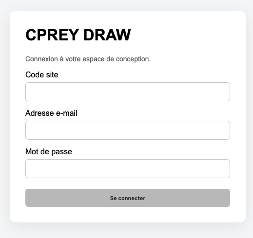
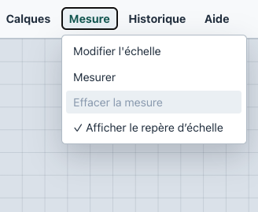

1. Demander votre accès
Pour utiliser CPREY DRAW, vous devez disposer d'un accès personnel. Faites une demande d'accès en indiquant votre adresse e-mail.
Après validation, un lien de connexion vous permet d'accéder à CPREY DRAW.
Guide utilisateur 1
Préparez le chantier avant de dessiner : accès, connexion, informations chantier, import du plan, échelle, paramètres techniques, tableau électrique et première sauvegarde.

Pour utiliser CPREY DRAW, vous devez disposer d'un accès personnel. Faites une demande d'accès en indiquant votre adresse e-mail.
Après validation, un lien de connexion vous permet d'accéder à CPREY DRAW.
Depuis la page de connexion, renseignez votre Code Site, votre adresse e-mail et votre mot de passe, puis validez pour ouvrir CPREY DRAW.

Après connexion, l'interface principale affiche la zone de dessin et la barre de menus : Projet, Plan, Insertion, Vue, Calques, Mesure, Historique et Aide.
Dans le menu Projet → Informations chantier, renseignez les informations correspondant à votre chantier.
Ces informations permettent d'identifier clairement votre projet et seront conservées avec celui-ci.
Sélectionnez Plan → Importer le plan, puis choisissez le fichier correspondant au niveau sur lequel vous souhaitez travailler.
Le plan est affiché dans l'espace de dessin. Vous pouvez ensuite le déplacer et utiliser le zoom pour travailler précisément sur les différentes zones.
Cette étape permet à CPREY DRAW de convertir les distances du dessin en distances réelles. Dans le menu Mesure, l'entrée s'appelle Définir l'échelle tant qu'aucune échelle n'est définie, puis Modifier l'échelle ensuite.
La longueur de référence apparaît sur le plan. Vérifiez ensuite l'échelle avec Mesure → Mesurer sur une ou plusieurs cotes connues.
Lorsque l'échelle est validée, utilisez Mesure → Effacer la mesure. Si vous ne souhaitez plus voir le repère de référence, décochez Mesure → Afficher le repère d'échelle.

Sélectionnez Projet → Paramètres techniques et vérifiez les paramètres proposés.
Sélectionnez Insertion → Tableau électrique. Une croix verte suit le pointeur de la souris : cliquez à l'emplacement prévu pour le futur tableau électrique.
Utilisez le zoom pour ajuster sa position. Lorsque le tableau est sélectionné, ses propriétés permettent de modifier sa position, son orientation et ses paramètres.
Lorsque son implantation est définitive, activez l'option Verrouillé afin d'éviter un déplacement accidentel pendant la suite du dessin.
Pour conserver une copie locale, sélectionnez Projet → Enregistrer sous…. Pour sauvegarder dans le Cloud SmartCPREY, sélectionnez Projet → Enregistrer sur SmartCPREY.
Votre projet est prêt lorsque le plan est importé, l'échelle vérifiée, les paramètres techniques relus, le tableau placé et une première sauvegarde réalisée.
{kind=link}
{kind=link}